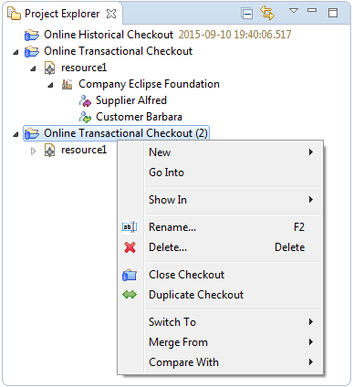
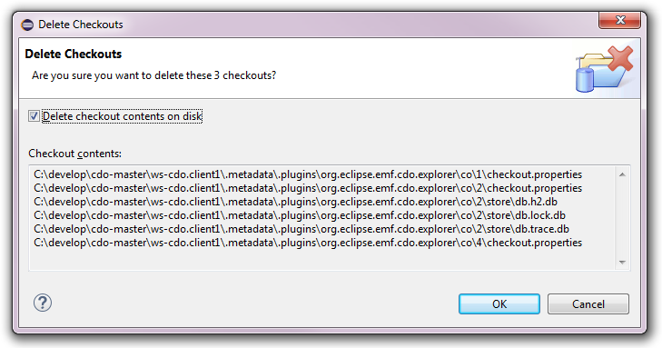
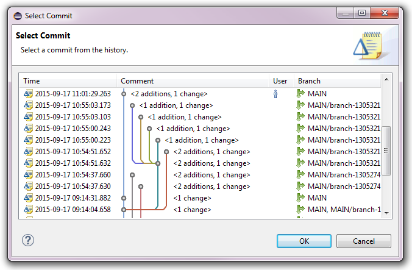
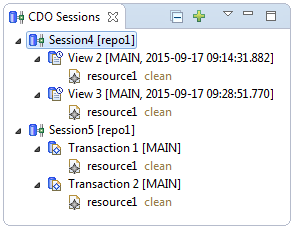
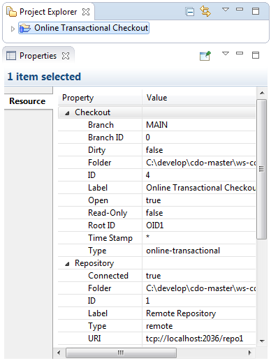

Working with Checkouts


Working with Checkouts |
|
The key concept of working with models in the Project Explorer is a checkout.
See Checking Out from Repositories for details on how to to create online transactional checkouts,
online historical checkouts, and offline checkouts.
A checkout represents a named combination of the following pieces of information:
branch point that determines from what branch and from
what time the models of the checkout are shown, and
root resource of the repository.
Once created, checkouts are displayed in the Project Explorer like workspace projects and decorated with a small blue repository image. In contrast to workspace projects the displayed checkouts have no physical representation in the workspace.

Table of Contents
CDO supports renaming an existing checkout, i.e., changing its label, at any time. A checkout can be renamed by selecting it and pressing the F2 key or selecting the Rename action in the context menu. The following dialog will pop up:
The dialog can only be finished with the OK button if the checkout label is either unchanged or changed to a not existing label.
Sometimes it is useful to have two or more checkouts from the same repository in the Project Explorer. A checkout can be duplicated by selecting it, opening the context menu, and selecting the Duplicate Checkout action. The result is an identical checkout with a unique default label:
To work with a configured checkout the checkout must be in opened state. Directly after creation a checkout is open. Directly after the startup of Eclipse all checkouts are in closed state.
If a checkout is closed it can be opened by double-clicking it or by selecting Open Checkout in its context menu.
If a checkout is open it can be closed by selecting Close Checkout in its context menu.
An existing checkout can be deleted by selecting that checkout and pressing the Del key or selecting the Delete action in the context menu. Several checkouts can be deleted at once. The following dialog will pop up:

Deleting a checkout does not delete the associated repository or any data in it. If the "Delete checkout contents on disk" checkbox is selected (i.e., checked) the locally replicated data of the possibly selected offline checkouts is deleted permanently!
Online transactional checkouts from repositories that are configured with the versioning mode branching can be switched
to other branches by selecting the checkout, opening the context menu and selecting the Switch To sub menu:
See Property supportingBranches for instructions on how to enable branching for remote repositories, Creating Local Repositories for instructions on how to enable branching for local repositories.
The Switch To sub menu consists of the following action groups:
Switching the branch of a checkout is also possible by dragging elements and dropping them onto the target checkout without holding any modifier keys pressed. The following elements can be dropped onto the target:
When a checkout is switched to a different branch the nested resource nodes and model elements, as well as all the contents of all open resource editors are changed instantly to reflect the state of the new branch.
See Also:
Online transactional checkouts can be switched to a newly created branch with the Switch To -> New Branch context menu action. The New Branch dialog will pop up:

See Creating Branches for an explanation on how to use the New Branch dialog.
Online transactional checkouts can be switched to any other branch with the Switch To -> Other Branch context menu action. The Select Branch Point dialog (without a time stamp area) will pop up:
.
Online historical checkouts from repositories that are configured with the versioning modes auditing or branching can be switched
to other branch points by selecting the checkout, opening the context menu and selecting the Switch To sub menu:
See Property supportingAudits for instructions on how to enable auditing remote repositories, Property supportingBranchesfor instructions on how to enable branching for remote repositories, or Creating Local Repositories for instructions on how to enable auditing or branching for local repositories.
The Switch To sub menu consists of the following action groups:
Switching the branch point of a checkout is also possible by dragging elements and dropping them onto the target checkout without holding any modifier keys pressed. The following elements can be dropped on to the target:
heads
Switching the branch point of a checkout is also possible by using the CDO Time Machine View.
When a checkout is switched to a different branch point the nested resource nodes and model elements, as well as all the contents of all open resource editors are changed instantly to reflect the state of the new branch point.
See Also:
Online historical checkouts can be switched to any other branch point with the Switch To -> Other Branch Point context menu action. The Select Branch Point dialog (with a time stamp area) will pop up:
.Online historical checkouts can be switched to a commit with the Switch To -> Commit context menu action. The Select Commit dialog will pop up:

.
All types of checkouts can be compared with other time stamps or
other branches from the same repository
by selecting the checkout, opening the context menu and selecting the Compare With sub menu:
The Compare With sub menu consists of the following action groups:
Comparing a checkout is also possible by dragging elements and dropping them onto the target checkout with the Shift and Ctrl keys pressed. The following elements can be dropped onto the target:
heads
When a checkout is compared with a different branch point an EMF Compare editor is opened with the left side showing the selected compare source (e.g., the drag source) and the right side showing the selected compare target (e.g., the drop target):

See Also:
Checkouts can be compared with any other branch with the Compare With -> Other Branch context menu action. The Select Branch Point dialog (without a time stamp area) will pop up:
.Checkouts can be compared with any other branch point with the Compare With -> Other Branch Point context menu action. The Select Branch Point dialog (with a time stamp area) will pop up:
.Checkouts can be compared with a commit with the Compare With -> Commit context menu action. The Select Commit dialog will pop up:
.
Offline and online transactional checkouts can be merged from other time stamps or
other branches from the same repository
by selecting the checkout, opening the context menu and selecting the Merge From sub menu:

The Merge From sub menu consists of the following action groups:
Merging a checkout is also possible by dragging elements and dropping them onto the target checkout with the Shift and Ctrl keys pressed. The following elements can be dropped onto the target:
heads
When a checkout is merged from a different branch point an EMF Merge editor is opened with the left side showing the selected merge source (e.g., the drag source) and the right side showing the selected merge target (e.g., the drop target):

See Also:
Checkouts can be merged from any other branch with the Merge From -> Other Branch context menu action. The Select Branch Point dialog (without a time stamp area) will pop up:
.Checkouts can be merged from any other branch point with the Merge From -> Other Branch Point context menu action. The Select Branch Point dialog (with a time stamp area) will pop up:
.Checkouts can be merged from a commit with the Merge From -> Commit context menu action. The Select Commit dialog will pop up:
.Checkouts can be shown in a number of other views depending on the type of the checkout by selecting them, opening their context menu, opening the Show In sub menu, and selecting one of the Show In actions.
Online transactional checkouts can be shown in the following views:
Online historical checkouts can be shown in the following views:
Offline checkouts can be shown in the following views:
Online checkouts can be shown in the CDO Sessions view:

A new session with the same target repository as the selected checkout is opened in the CDO Sessions view.
A new transaction is opened on that session, pointing at the same branch point as the selected checkout.
Online histrical checkouts can be shown in the CDO Time Machine view:

Offline checkouts can be shown in the CDO Server Browser:

The CDO Server Browser allows to introspect the internal data of the locally replicated repository in a web browser. It is only meant to be used for test and debug purposes. It is not meant to be a production tool that would scale to arbitrary repository sizes!
All checkouts can be shown in the Properties view:

All checkouts can be shown in the History view:

This is particularly useful if the "Link with Editor and Selection" button in the toolbar of the History view is not enabled and the history page does not automatically adjust to the workbench selection.
All checkouts can be shown in the System Explorer:
Each checkout owns a dedicated directory under .metadata of the current workspace. This directory contains the checkout.properties file that contains the configuration of the checkout. Offline checkouts also store the database of the locally replicated repository and baseline data of dirty model elements in this directory.
Online checkouts operate directly on the data stored in their repository and therefore require an active network connection; i.e., the repository must be in connected state. They are ideally suited to support real-time collaboration on models, but they can only be open when the underlying repository is reachable, which is not necessarily always the case for remote repositories.
Offline checkouts, in contrast, operate on locally replicated data of their repository and therefore do not require an active network connection; i.e., the repository can be in disconnected state. They are ideally suited to support offline work on models even during periods when the underlying repository is not reachable. Collaboration on the contained models is restricted to explicit synchronization times, i.e., when updating the checkout from remote or checking it in to remote.
Offline checkouts, as well as all their models and model elements are decorated with their local editing state, i.e., clean, dirty, or new.
Apart from these subtle differences offline checkouts are designed to behave in a very similar way as online checkouts. In addition a few special operations are available for them, which are explained in the following nested sections.
See Also:
Because the models and model elements in an offline checkout are not updated in real-time they need to be updated manually at appropriate times, e.g., before attempting to check it in to a remotely modified repository.
To update an offline checkout from remote the checkout is selected and the Update action chosen from its context menu. The update process tries to merge all trivial conflicts they may arise. Trivial conflicts are:
If non-trivial changes are detected, i.e., changes to the same single-valued EStructuralFeature feature on both sides of the same model element, an EMF Merge editor is opened:
The left side of the merge editor shows the remote repository and the right side shows the selected offline checkout. Saving the merge editor applies the needed changes to the local model elements and closed the merge editor. The update/merge process can be canceled by closing the merge editor without saving it.
Updating an offline checkout is a remote operation.
See Also:
After having worked with the models and model elements in an offline checkout for a while it may seem appropriate to check in the changes that accumulated during this period back into the remote repository.
To update an offline checkout from remote the checkout is selected and the Checkin action chosen from its context menu.
Checking in does not strictly require the local offline checkout to be up-to-date as long as the local changes and the remote changes are not conflicting (i.e., neither trivial nor non-trivial conflicts exist). If conflicts are detected during the check-in process the following dialog pops up, asking to update the checkout first:
Checking in an offline checkout is a remote operation.
Sometimes it may seem useful to discard all local editing state of the models and model elements in an offline checkout, effectively reverting the checkout to the most recently updated state.
To revert an offline checkout the checkout is selected and the Revert action chosen from its context menu. The following confirmation dialog will pop up:
Reverting an offline checkout is a local operation.